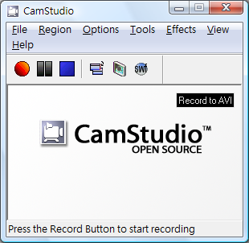

分享、記錄你的桌面影像 - CamStudio

◎ 關於桌面錄影軟體
桌面錄影軟體對一般大眾而言，其實並不像一般工具軟體那麼重要，但這一兩年來搭上 Youtube 的熱潮，分享影片越來越簡單，而類似的錄影軟體，開始吸引更多人的目光。
目前市面上常見桌面錄影軟體有兩種類型，第一種是全動態的錄製，從按下錄影鈕開始，滑鼠的移動、檔案的拖曳、文字的輸入，都會被忠實的記錄下來，讓使用者可以拍攝細膩的影片，缺點是反應太真實，反而讓教學類的影片後製處理很麻煩，對於講解軟體操作而言，多餘的滑鼠動作很容易影響效果呈現， TechSmith 的 Camtasia Studio 即為此類型的代表。
另一種錄影方式為投影片式，擷取一張一張的靜態畫面，在後製時，錄製者可自由加入註解且控制游標的落點，將這些投影片組合起來後，看起來像連續操作的動畫，觀眾可清楚瞭解作者想要表達甚麼，缺點是錄製連續動作會不知所云，以檔案拖曳為例，一張接一張的停格圖片真的很難表現，此類型的代表為 Adobe 的 Captivate。
兩種類型的軟體各有優缺點，沒有誰好或誰不好的問題，而是該如何使用軟體。假設您有一款電玩遊戲，你想分享一套高難度的過關技巧給朋友，使用 Camtasia Studio 拍攝是比較適合的。假設你想介紹一套新的軟體，需要慢慢解釋軟體介面、按鈕的用途，那 Captivate 的錄製方式會較容易說明。但以上我提到的兩個例子都是商業軟體，且價格不斐，自由軟體中有易學易用的桌面錄影軟體嗎？筆者在這邊向您推薦 CamStudio。
◎ CamStudio 介紹

CamStudio 屬於全錄製式的桌面錄影軟體，可以讓您錄製在桌面上的各種操作及聲音，並將影片儲存為 avi 檔或 swf 檔。它可以錄製桌面所有動作，適合動態畫面的拍攝但對於教學類的動畫拍攝會比較困難。它是一個綠色軟體，意即它具有可攜性，不必安裝即可使用，你可把它放在隨身碟中，帶到其他台電腦中使用。CamStudio 其實並不是一個新的軟體，它最後一個釋出版本為 2007 年 9 月，目前在尋找新的開發者，但由於它使用上的便利與彈性，在這個影音化的時代，讓它再度受到人們的青睞。
◎ CamStudio 功能簡介：
※ 將錄製的影片轉為 Flash 檔案 (*.swf)，讓你可以輕易地將影片放置在網路上分享。
※ 可自行替換影片錄製的編碼格式，錄製畫質更好，檔案更小的影片。
※ 拍攝桌面時，可連結 webcam 和麥克風，同時錄製操作者的影像及聲音。
※ 基本的螢幕註解工具，讓您拍攝影片同時，加入影片註解。
◎ 下載及安裝
軟體名稱 CamStudio
軟體版本 2.5.b1
軟體授權 GNU General Public License (GPL)
官方網站 https://camstudio.org/
軟體下載 https://camstudio.org/dev/
開啟下載頁面，使用者必須分別下載兩個檔案，CamStudio.2.5.b1.bin.zip 與 mfc71.dll。
下載完成後，將 CamStudio.2.5.b1.bin.zip 解壓縮到新建立的資料夾中，並將 mfc71.dll 一起放入資料夾內，完成後，點選 Recorder.exe 即可開啟 CamStudio。
◎ 錄製第一個影片
錄製很簡單，點選錄製鈕即開始錄製，你也可利用熱鍵來操作，開始錄影為 F8 鍵，結束錄影為 F9 鍵。
在錄製影片前，提醒大家幾個應注意的基本設定：
1. 錄影範圍
錄影範圍有四個選項：Region(自選範圍)、Fixed Region(固定範圍)、Window(視窗)、Full Screen(全螢幕)，使用者可依照需求選擇範圍，但在這邊建議大家，使用 Fixed Region(固定範圍)，主要原因是其他選項都有其無法忽視的缺點，以下說明：
※ 以 Region 而言，雖然使用者隨意可圈選想錄影的範圍，但螢幕比例不外乎4:3、16:9、16:10，不是這幾個比例的影片，很容易在播放時，產生一大塊黑邊。
※ Window、Full Screen 的錄影範圍比較不會遇到比例的問題，但由於現在大家使用的螢幕，動不動就 19 吋、21吋，解析度都在 1280×1024 以上，若您真的全螢幕拍攝，拍不到 30 秒，產生的檔案大小就相當可觀。
※ Youtube、無名影音等上傳影片網站，都有上傳影片尺寸的建議值，您在網頁上瀏覽影片，播放的視窗就那麼一小塊，雖然有全螢幕播放，但事實上那是變形後的播放，與其變形後影響畫質，不如根據建議值尺寸拍攝。
Fixed Region(固定範圍) 的設定：
1. 用選擇器得知視窗座標，圈選範圍的長寬。
2. 固定錄影範圍的左上角:
配合選擇器取得作標，將錄影範圍固定在螢幕中的某一個位置，方便作者錄製某一個視窗。
3. 輸入範圍的長度寬度：
控制錄影範圍，建議使用者以 4:3 或16:9 的比例縮放錄影範圍，範例：320×240 。
4. 在拍攝時，可拖曳攝影範圍。
2. 是否要錄製聲音
點選 Options 可選擇是否要錄製聲音。
聲音可增加影片的趣味與可看性，但相對的也會增加檔案的大小，不同的聲音壓縮格式產生的檔案大小和聲音品質也不同，使用者必須在之間取捨，以 DivX Codec 為例，10 秒鐘、 320×240 尺寸的無聲音影片錄製，檔案大小約 500 KB 左右，但若加上聲音錄製，將會提高至 1.5 MB，約原大小的三倍 (以上數據僅供參考，檔案大小會因錄製環境有所不同)。
3. 是否要加入游標
點選【Options】→【Cursor Options】 可選擇是否要加入游標，也可自訂游標的樣式。
1. 顯示實際的游標。
2. 顯示 CamStudio 提供的客製化游標，約有三十幾種選擇。
3. 顯示上傳的游標圖案，上傳檔案格式必須為 *.ico、*.cur。
除此之外，Camstudio 還提供游標高亮效果，突顯游標所在位置，它還能模擬游標點擊，顯示點擊滑鼠左鍵或右鍵時的落點。
1. 顯示游標高亮效果，你可以自定形狀，可以自定大小，個人使用時，習慣將範圍調小，讓游標點擊時，看其來像點擊落點。
2. 啟動虛擬的點擊顯示，當你按下滑鼠按鍵時，會以不同顏色顯示高亮效果，你可以自定點擊左鍵和右鍵的顏色。
4. 錄影時最小化視窗
點選【Options】→【Program Options】→【Minizine program on start rdcording】，當 CamStudio 開始錄影時，會自動將視窗自動最小化至右下角。
◎ 如何錄製畫質好，檔案小的影片
範圍、聲音等設定調整好，通常已滿足大部分使用者的需求。然而，其實以預設的影像設定與聲音設定拍攝出來的影片，檔案太大，且畫質與音質都不是最佳狀態，接下來我將教大家 CamStudio 的細部設定，拍攝出畫質更好，檔案更小的影片。
點選【Options】→【Video Options】可選擇 Codec (影片編解碼器) ，這是影響影片品質主要因素，CamStudio 預設的 Codec 為 Microsoft Video 1，它是早期影片編碼器，通常安裝任何一版 Windows 都會附帶此程式。雖然它方便取得，但以它編解的影片畫質並不佳，通常與實際拍攝對象會有一段差距，若想要製作畫質更佳的影片，第一步應該是替換 Microsoft Video 1。
網路上能找到的 Codec 相當得多，如 XviD、DivX、x264、QuickTime、RealVideo 等等。但 CamStudio 目前只支援 MPEG-4 的 avi 檔案格式，所以這裡推薦的 Codec 只剩下 Xvid、Divx，個人首選為是開放原始碼的 Xvid，不僅因為個人較編好開放原始碼，而是 DivX 在 CamStudio 的使用會有範圍限制問題，針對此問題，官網建議尺寸為 320×240 ，但事實上，不論 DivX 或 XviD 兩者產生的影片畫質與檔案大小都優於 Microsoft Video 1 相當多。
◎ XviD 的安裝
在 Xvid 的官網 中，能下載最新的安裝程式，安裝方式跟一般軟體相同，按照指示說明即可安裝完成，有兩種方式可確認是否安裝成功，第一為檢視 Camstudio 的 Compressor 下拉式選單，安裝成功，可以看到 Xvid MPEG-4 Codec。
第二，如果你使用 Windows XP 作業系統，可開啟【裝置管理員】→【音效，視訊及遊戲控制器】→【視訊轉碼器】→【內容】，列表中會顯示你所有可用的 Codec。
安裝完 XviD 即可開始測試錄影的畫質，以下為分別以 Microsoft Video 1 與 XviD 錄製相同的桌面時的擷取畫面，使用者可大略知道畫質的相異程度，XviD 顏色表現較平滑，不會因壓縮後產生明顯的破損。
Windows Video 1

XviD MPEG-4 Codec
檔案大小也有相當的落差，以 Windows Video 1 拍攝白色背景桌面，10 秒，無聲音錄製，產生約 700 KB 的影片檔，以 XviD 拍攝相同環境產生的影片大小約 70 KB，雖然產生的數據大小必須看每個人的拍攝環境，但已看出兩者壓縮的影片大小的能力。
◎ 將拍攝好的影片上傳至 YouTube
拍攝完成後，分享檔案變成另一個問題，由於之前的拍攝建議，使用了 XviD 或 DivX 等 Codec 來拍攝影片，若要正常播放這些影片，對方的電腦也必須安裝這些 Codec，雖然安裝 Codec Pack 是解決方案之一，但不是所有的電腦用戶都會安裝這些軟體，當然你也可以將 avi 檔轉成 swf 檔案，但將影片上傳至 YouTube (或其他影音網站) 是我比較建議的分享方式。
由於 YouTube 能支援多種檔案格式，只要將檔案上傳至 YouTube 的個人帳號，被分享的朋友只要用瀏覽器即可觀看影片，如何上傳檔案，如何最佳化上傳影片，在 YouTube官網的說明文件中有詳盡的教學，不再多累述，值得一提的是，若要使用 CamStudio 拍攝 Youtube 上傳影片，要如何最佳化設定？以下提出個人建議的各項設定值：
1. Fixed Region：640×360
2. Compressor: XviD MPEG-4 Codec
3. Quality：100
4. Set Key Frames Every：25 frames
5. Capture Frames Every：40 millisecond
6. Palyback Rate：25 frames/second
7. Audio Compressed Format：Lame MP3
其實任何建議都比不上自己動手去測試，視訊來源、影片格式、甚至影片類型 (動畫、MV、軟體介紹) 都會影響錄製設定，唯有親手去玩，去拍攝，才能做出一部好的影片。
◎ CamStudio 應用範例
※ 軟體操作示範
CamStudio 設定簡介
※ 擷取MSN對話與視訊
擷取MSN對話與視訊